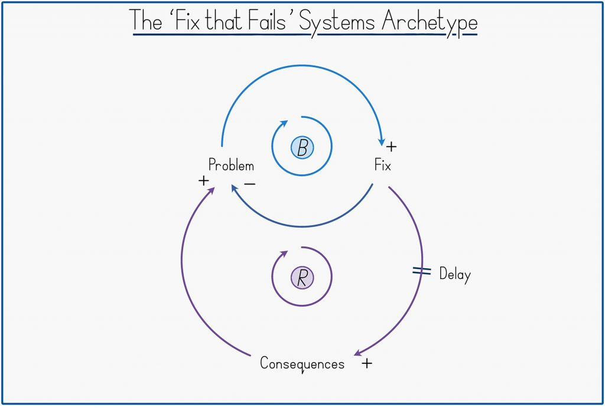
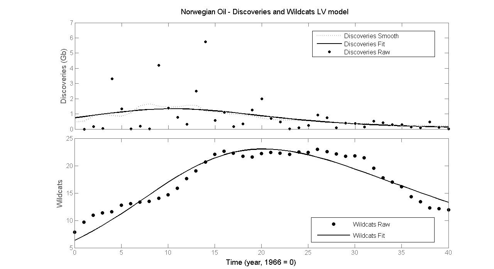

36 Resource Economics
36.1 Sustainability
36.1.1 VML - Voluntary Market Led Sustainability
Austin
Though our roughly 6-decade response to global environmental challenges – since Rachel Carson and others alerted us in the 1960s – is a long time for an individual human being, from the perspective of the complex system of humankind, all our efforts to date constitute merely the first adaptive responses we have been able to implement in short order. The form of this emergency response has necessarily been constrained by the patterns of collective behaviour we had arrived at before recognizing our new context, for reasons that have nothing to do with the new context. It is a crisis precisely because it has not found us prepared – behaviourally, organizationally, even cognitively. Predominantly a Voluntary Market-led (VML) response What has been the nature of this first response? Of course, it has been multi-faceted, but as befits our market-centric modern society, it has come to be dominated by voluntary market-led strategies under various banners – ethical investing, socially responsible investing (SRI), corporate social responsibility (CSR), environmental, social and governance (ESG) initiatives, impact investing, divestment campaigns, reporting and disclosure frameworks, corporate engagement efforts, stakeholder advocacy and more.
VML is most easily defined by what it opposes. ‘Voluntary’ denies, or at least strongly opposes, the need for enforceable regulations and policies to achieve sustainability goals. ‘Market-led’, implicitly upholds the idea that the key market dynamics of profit maximization and economic growth are not only not impediments to sustainability but critical drivers of the solution.
VML emerged as our predominant adaptive strategy from the mid- 1990s, not out of any confidence that it would be a sufficient response, but because it was the only scalable response established Western socio-economic norms could tolerate at that time.
In short, a major pattern of the last 50 years is that a long-gestating neoliberalism captured a fledgling environmentalism and VML’s ‘win-win’ proposition was about all the environmentalism we could muster. The question today is whether this VML adaptive response can generate ‘enough sustainability before it is too late’.
While the VML meta-strategy has certainly delivered gains that would not otherwise have occurred – in accelerated green innovations, widespread awareness, and incremental behaviour change – after 25 years, it is becoming apparent VML cannot generate ‘enough sustainability in time’, which is increasingly the only interpretation of sustainability that matters. Basically, our first response strategy does not seem to be working.

Figure: The ‘Fix that Fails’ Archetype. A top loop ‘balances’ an initial problem. (‘The problem leads to more of a fix that leads to less of the problem’). However, it is offset by a second, delayed, loop that only reinforces the initial problem (‘The fix leads to consequences that lead to more of the problem’).
If VML is the ‘first response’ of a complex system to an abrupt new awareness of context, certain concepts developed to understand complex systems can help us identify the type and extent of response VML has been and what its limitations now point to.
What I will call ‘systems thinking’ – sometimes also ‘complexity science’ or the study of ‘complex adaptive systems’ – is now inexorably and beneficially on the rise as a counterpoint to the reductionism that has underpinned Western thinking for the last 350 years.
Systems thinking invites two high-level conclusions about the VML strategy – helpfully both alliterative. First, the tool of Causal Loop Diagrams suggests that VML is a ‘fix that fails’ – an ubiquitous pattern in which genuine ‘fix’ actions are offset or even completely overturned by unintended ‘fail’ consequences.
More encouragingly, reflecting on the layered adaptive architecture of complex systems reveals that VML has been a possibly inevitable, not unhelpful ‘defence at first depth’. Complex systems adapt by working through ‘fixes that fail’ until they land upon a deeper ‘fix that works’.
It is within our capabilities to adapt in this way, but it implies we must graduate quickly from the initial shallow response of VML to deeper responses of policy and culture change that now offer the only realistic means of averting climate and ecological crisis in time. Because the nature of these deeper changes conflicts with certain premises of the VML strategy – particularly VML’s compromised ability to advocate for economic growth-reducing demand-side measures – initiating such changes requires the conscious giving up of certain beliefs and claims made for VML. As such, among the individuals who can most powerfully and credibly trigger the transition to deeper changes are precisely those individuals who have historically promoted VML strategies, whose public ‘change of mind’ might now constitute a disproportionately powerful signal of the limitations of our first response.
Missing the physics for the finance. Plainer still, one can look through the economics to the underlying physical reality. A sustainability discourse conducted in business and economics terms continues to miss the physics for the finance. Our climate and biodiversity challenges are fundamentally driven by human transformation of matter and energy at a scale and pace that exceeds Nature’s capacity to absorb. In response, VML aims to transform the world more sustainably, but the building of a clean economy has simply become the new banner by which we accelerate our transformation of the physical world. We frame the build-out of a clean economy as ‘greener’, but the Earth just registers ‘yet more’ transformation of matter and energy overwhelming natural processes. VML denies that a large part of our sustainability response requires establishing a slower and gentler interaction with Nature to fall back into balance with its pace. Less, not more.
Layered architecture of complex systems A universal feature of complex systems is that they emerge or self-organize as hierarchical or layered systems comprised of fast-responding surface adaptive capabilities underpinned by slower-moving capabilities. This results in complex systems responding to adaptive challenges in a layered or cascade fashion.
Layered behavioural architecture seems to be Evolution’s elegant solution for handling the innate challenge facing all living things – from simple organisms to complex societies – namely the need for some rigidity to uphold and perpetuate existing beneficial behaviours and yet also some flexibility to respond to new circumstances. Both are beneficial but must be in tension. A complex system in adaptive crisis must find a ‘fix that works’ before it is too late.
At the even lower level of ‘culture’, the predominant Western culture remains firmly anchored around consumerism and has most recently taken to celebrating people playing spaceship.
With our heavy dependency on VML strategies to address the sustainability crisis, we are effectively defending at first depth only. Governance and culture are certainly more entrenched, slower moving forces, but it is when these gears begin to turn that society really starts to shift. As Brand puts it: ‘Fast gets all our attention, but slow has all the power.’ As the profundity of our sustainability crisis sinks in – ‘sinks in’– it is becoming clear that we must solve our sustainability challenge at a deeper level than initially thought. In a sense the challenge of our ‘race against time’ adaptive crisis is to now shift deeper and more powerful mechanisms of social change faster than perhaps ever before.
To accelerate deeper change requires an emergency review of the – entirely pre-Anthropocenic – thinking implicit in our governance structures and cultural beliefs, how they got that way and how they might be different. It is layers again, not of our institutions, but of our prior cognition and reasoning that first shaped those institutions and is now reinforced by them.
Western societies have iterated towards a market primacy of self-organization over the last two centuries, in the belief that it was the best means by which to advance human welfare. However, market primacy of human self-coordination is itself a fix that fails because the positive benefits of market-driven economic growth and innovation are undermined by lagging, unintended consequences not registered by the market system – ‘externalities’ – of a scale far greater than most economists and politicians have historically been willing to recognize, and than government and philanthropic efforts currently absorb.
A study by Robert Costanza and colleagues estimated the monetary value of the ‘services’ provided free by the Earth’s ecosystem at $125 trillion in 2011, nearly twice the value of global GDP (gross domestic product). 54 Just from this one assessment of some ecosystem benefits, much more ‘value’ is unknown to the market than known. The same study estimated that annual ecosystem services had been depleted by $20 trillion since 1997, during which time conventionally measured real GDP increased by $29 trillion, for a net gain of $9 trillion While conventional global GDP grew by 3.5 percent per annum during the period, a fuller measure of ‘total wealth creation’ would have grown by only 0.3 percent to 1.7 percent per year – that is, ‘growth’ would have been at most half what we registered, at worst virtually non-existent.
What we are effectively doing is counting the positive monetary growth of the market system’s ‘fix’ loop, while ignoring the unmonetized costs of the ‘fail’ loop.
Scale of externalities not yet accepted Possibly the key driver of our sustainability crisis is that the dominant Western culture has not achieved sustained acceptance – distinct from mere theoretical admission – of the scale of market externalities and what that must imply for claims made about the superiority of market-led coordination.
‘We need more data’ seems to be the universal belief. No, we don’t. We have more than enough data. We need acceptance, which is qualitatively different to admission, such that we cannot simply disclose more and more data and expect to arrive at acceptance.
he failure of economics to cultivate the sustained acceptance of externalities is increasingly becoming the most pertinent fact about the whole discipline. Not only did economics – the ‘science of markets’ – not encourage acceptance of externalities, but it also made strenuous effort to downplay or even trivialize them.
The hope of early economists, subsequently bolstered by ideals of complete market theory, was that market systems would be self-regulating, removing or minimising the need for government regulation. And, certainly, an economy contains many balancing processes. If the demand for bread increases, the price of bread will rise inducing more supply so bringing the price back down again. The market contains a great many ‘self-regulating’ or rebalancing, loops. However, the market is not only self-regulating, but also susceptible to positive reinforcement loops that can become runaway problems. This was crystallized by Brian Arthur in 1990, when he identified that economic systems did not just exhibit ‘diminishing returns’ – or balancing loops – but also, quite commonly, ‘increasing returns’ – or reinforcing loops. Because neoliberalism has granted markets primacy, and because markets are vulnerable to large-scale runaway effects, neoliberalism is effectively a runaway feedback loop.
Many of our biggest problems - global debt accumulation, wealth inequality, climate change and biodiversity loss – all exhibit runaway, vicious spiral, dynamics seemingly beyond the powers of the market to rein in.
The erosion of the government’s capacity to modulate market forces is itself the consequence of certain powerful reinforcing loops intrinsic to neoliberal logic.
In what might be called ‘Friedman’s Feedback Loop’, corporations’ ‘social responsibility to maximize profits’ has, over time, seen them spend large amounts of money lobbying government to change the rules to allow them to increase profits, providing them with more resources to lobby governments etc.… As this inexorable process of regulatory capture persists, a society progressively steers less by a sense of what is ‘good’ and more by what is ‘profitable’.
Equally, in what might be called ‘Reagan’s Reinforcing Loop’, if perception spreads that ‘markets are the solution and government is the problem’, human talent will slowly but surely be drawn towards the private sector and away from public service.
Our still extending – and so still incomplete – market system continues to annex new, previously uncommodified, realms, but in asymmetrical fashion. It opens new frontiers of profit but cordons off areas of potential cost.
The argument for market primacy is predicated on the power of price signals to achieve a more efficient allocation of goods and services than might be achieved by the cumbersome and coercive ‘central planner’, but in practice, this power of price signals can now only be extended to generate new profits, not new costs. And so, we are denying ourselves the use of the market system and its price signals to tackle possibly the most critical scarcity problems we have ever identified – limited atmospheric capacity for greenhouse gas emissions and limited capacity of ecosystems to absorb or tolerate our activities.
As such, one can turn the tables and ask: if we don’t need prices for the greenhouse gas emissions driving runaway climate change, and we can instead rely on people voluntarily to take the steps consistent with those prices without them being implemented, why bother having prices for anything at all? Why not just assume that people will always voluntarily behave in ways that collectively advance human welfare?
Among the more effusive accolades made of the market system is that it is a form of ‘intelligence’. And while there is something to this in the autonomous way the market system marshals goods, services and human time and effort, it can only be a partial intelligence because the market has no inkling of the non-commoditized and non-priced world.
A market-centric culture commits to follow where profit leads. Quite important, then, that either we calculate profit sustainably or we temper our market-centricity.
At a yet deeper level, one can trace the threads of today’s market-acquiescing VML response to momentous cognitive developments of the 17 th century that shifted the Western world onto an entirely new cultural metaphor, which in turn paved the way for our excessive credulity in the power of markets, and our equating of market growth with moral improvement.
Just as scientists rarely waste time questioning long-established axioms of their discipline, so our shared myths or metaphors warrant little comment or reflection because, after all, the view from within a culture is that it is so obviously the way the world is and must be!
The essence of reductionism is that knowledge can best be acquired by breaking things down to pieces, learning how the pieces work and then ‘adding back up’ this knowledge to arrive at a greater comprehension of the whole. At the dawn of the Scientific Revolution, reductionism profoundly shaped our sense of what science even was. A scientific method was then ‘too hastily expanded’ into other fields of investigation, including – fatefully – those concerned with living, complex things. This had the inadvertent consequence of rendering other methods of investigation more suitable for living things as ‘non- scientific’ – a pejorative designation that has catastrophically held back our comprehension of the living world, including ourselves, and encouraged a dismissiveness of non-Western insights and traditions.
However, the slowly-dawning meta-learning of the Scientific Revolution, spearheaded by the rise of systems thinking, is that as you move ‘up’ from inanimate objects to more complex systems – from ‘dead’ things to ‘living’ things – so reductionism gradually loses its power as an explanatory method, because the ‘add back up’ assumption breaks down. A core essence of systemism is that ‘the whole is more than – or different to – the sum of the parts’. ence as we move up, we repeatedly encounter new levels of organization whose behaviours cannot be fully anticipated even with complete knowledge of the parts. These ‘discontinuities’ in emergent complex systems represent new levels of complexity, requiring understanding in their own right. Most important of all – though we cannot get into it here – is that at some point on this upward journey, we encounter something we have come to call a ‘mind’, capable of deriving meaning from the world and forming expectations about it, both critical, but subjective, capacities of living things brutally excised from the reductionist ‘scientific’ view of the world.
Essentially, the Western mind fell into a Valley of Reductionism, which was positively beneficial for physics and chemistry, but which has been a decidedly poor vantage point from which to understand living systems, including human society and global ecology.
The problem is not that Smith or Mandeville were wrong about the market’s powers to transform greed into good, but that we came to believe that the market could fully capture and neutralize greed. But if markets are incomplete – if externalities exist – then markets do not capture and neutralize all the effects of greed, with the consequence that some greed slips through the market net and behaves like, well, plain old greed with excesses that destabilize the social and ecological system.
We have lost sight of the earlier, intuited, understanding that admonitions against greed constituted an important balancing loop in the complex system of human society.
Having given greed freer rein, we have gradually super-sized the impulse via the creation of corporations – ‘corporate persons’.
We have a market system that does not ‘add everything back up’ and so cannot neutralize all greed, some of which spills out to drive inequality and destroy the ecosystem. At the same time, old cultural injunctions against greed have lost their potency. With incomplete markets and diminished capacity to appeal to individuals’ moral sense, we find ourselves systemically and institutionally induced to free ride upon each other and the social and ecological costs slowly accumulate in the background.
Though we have tended to perceive our ecological challenges as dating from the mid-20 th Century, I believe we will not be able to solve them until we recognize them as a lagged response to profound cultural shifts dating back to (at least) the 17 th Century. That does not imply that we need to roll back the clock and reinstate a pre-market society, only that we need to re-assess each link of the chain of thought that brought us to this point to see whether each link still makes sense in the abruptly different context of the Anthropocene.
If the context changes around a culture – as with the shock of the Anthropocene – a whole culture may end up displaying unconscious incompetency, by, say, polluting its own atmosphere, destroying its natural base, or creating social inequalities that slowly tear society apart.
World as Nested Complex System Seeing the world as an Emergent Nested Complex System brings three key features of living systems into view that enable us to understand how complex systems might adapt in a crisis.
- Enabling constraints.
The innate structure of a complex system is the counterintuitive idea of ‘enabling constraints’ or ‘constraints that deconstrain’. ‘Constraints that deconstrain’ expresses the idea that the pay-off to the constraint is a new, ‘higher’ space for the system to explore. The idea that a constraint is an enabler or, in reverse, that ‘freedom comes from constraint’ is counterintuitive but it pervades systems architecture and is everywhere once one starts to look for it. What pops out towards the top of the human stack of constraints are experiences we describe as ‘free’. Individual freedom is dependent on the underlying enabling constraint of a Rule of Law and prior norms of justice. What gives us our freedom is everyone else constraining themselves to respect our rights. The misleadingly named ‘free market’ is entirely dependent on the enabling constraint of legally enforceable property rights. Constraints are the sine qua non for the self-organization of an emergent system. They are the scaffolding that brings complex life up out of the primordial soup.
- Path dependency
Complex systems simply have not had enough time in the history of the Universe to try all possible solutions to land on the optimal path, so each complex system constitutes a highly path-dependent exploration of a vast ‘possibility space’. One visualization of our sustainability crisis is that our human complex system has emerged in a context of an effectively limitless world with new frontiers always on hand, only to abruptly find itself in a finite and fragile world. Our emergent behaviour was not premised on this assumption and many ‘old’ ideas, habits, traditions and customs are no longer consistent with it, even though they are familiar and engrained. In some sense, the human ‘stack’ is now perceived to be in the wrong place relative to where it needs to be.
- Two directions of adaptation
The emergence of each complex adaptive system represents an upward exploration within the space laid out by lower constraints, of which the base immoveable constraints are the laws of physics and upon which each successive layer establishes successive guardrails directing further upward movement. With the ‘extended order’ market system now on top of the human stack, we have found a mechanism that accelerates upward innovation via the spur of individual profit gain. New ideas are ‘market-tested’ to see what works and what does not. But the implication is that we are emerging upwards where profit directs. In contrast, there is a second type of learning which can be visualized as moving sideways, in an ‘unlearning and relearning’ process – or an ‘uninstall and reinstall’. It might also be termed ‘calibrative’ learning because it amounts to recalibrating some existing parts of the established structure in the face of new context. In a sense, a complex system is continually correcting for imbalance. Such learning is effortful and costly, because it is not just the ‘building on top’ of upward learning but the intentional breaking of a trusty habit or once-cherished custom, which may have been justified at an earlier time but is now deemed wrong or unhelpful. Part of the cost of sideways learning is the difficult crystallization of a psychic loss, or that what we may have been doing for years or decades is now ‘wrong’, by today’s contextual demands.
The innate tension between VML strategies and policy and cultural changes is that they represent two fundamentally different directions of adaptive response. Many of our green solutions represent yet more complexity, not just in the design of more high-tech components – from intricacies of new batteries to advanced materials – but in the more complicated supply chains and two-way, intermittency-handling electricity grids behind the scenes. All the ‘clever’ sensors, smart meters and real-time demand management programs add up to more complexity. Overwhelmingly, our VML strategies are upward movements.
The beneficial adaptive power that lower levels have over the higher levels is that they can reframe the space in which higher level complexity can take place. Hence, with its powers to set property rights, prices and regulations, government has the capacity to re-shape the entire ‘market space’. The real adaptive value of this power is to constrain or abolish activities currently taking place at the higher level, which are now deemed to be a threat to the system. The cost of lower change is why our first-choice strategy is invariably to try and avoid it.
Policy and culture are prior to markets. The widespread inclination by VML practitioners to believe that any sustainability effort is better than none at all misses the tension that exists between VML and policy strategies. The natural enthusiasm for VML is in part a manifestation of the difficulty of calibrative learning. We are hoping that market-led innovation may obviate the need for wrenching uninstall and reinstall of property rights, laws and cultural norms, but it is looking less and less likely that will work. Yet, as a market-reaffirming movement, the execution of VML strategies is a daily reinforcement of market primacy, which postpones deeper level policy and cultural changes whose beneficial adaptive power is precisely that they can choke off certain market activities we can no longer tolerate, in a way that market-conforming VML strategies cannot.
Where the market surpasses government is in its real-time facility to respond to ever- changing supply and demand signals. Markets are great at detail.
An emergent nested view of human society suggests that a better conception of government is as a ‘central director’ not as a ‘central planner’. What a central director can do much more effectively than markets is work at a lower level of the system to redirect the innovation space in broad brush strokes by adjusting property rights.
Granting that a ‘central director’ – preferably of capable, elected human beings – can see broader and further into the future than partially-sighted markets, would be to hitch a complementary intelligence to the market intelligence we largely steer by today. Re-legitimizing government’s role to establish new property rights – ‘you know, government might be a key part of the solution’ – should now be a central goal of any business with sustainability aspirations. It would effectively be to re-embed markets that have become, as Polanyi warned, too disembedded. It would be to make markets a tool of human culture, not human culture the by- product of markets.
It will dawn on people that an immediate consequence of limits-respecting markets must be a slowdown in ‘growth’ as we have been measuring it because they would reflect new limits we have not been considering.
In the real world of very incomplete markets, things of human value lie in two separate realms – the marketed domain and the non-marketed domain. Some of the growth of the marketed economy genuinely arises from human ingenuity and creativity unlocking better ideas and products from new combinations of inputs. This seems like ‘good’ growth, which ought to be celebrated and encouraged. However, other parts of monetized ‘growth’ arise from simply running down the stocks of what is valuable but in the non-marketed realm. This is the illusion of wealth creation based on registering the increase in marketed value, but not recording the decrease in unmarketed values. In contrast to growth from genuine ingenuity, this is ‘wealth’ conjured up by the Unmentionable Cost-Shifting Foot.
Our measured economic ‘growth’ overall combines in unknown proportions a ‘creative growth’, which we want to encourage, and a ‘parasitic growth’, which we do not.
I don’t know if the term ‘capitalism’ would survive the journey to this new cultural ground – or whether that would even be desirable. The specific problem with the term ‘capitalism’ is that its mere utterance upholds the entrenched view that markets have primacy over policy and culture, which just locks in the externality-denying capitalism we currently practice. Instead, the goal must be to have a market system that operates within a human cultural context that recognizes market externalities are real and significant. This wouldn’t be capitalism or socialism so much as a model of limits- respecting social coordination, for which I am not sure there is yet a name.
Returning to the surface, we arrive not at a ‘sustainable economy’ but at the ‘economy of a sustainable culture’. We will have effectively internalized that sustainability is a property of the whole, not of the parts.
Our current market primacy of self-coordination is rooted in thinking that is entirely pre-Anthropocenic.
The great hope of the VML strategy was that there would be a business case for sustainability. But, if sustainability must mean ‘sustainable enough before it is too late’, the meta-learning is that there is just not much of a business case to rely on. The business case is simply too weak and compromised a force to promote enough change fast enough. Instead, the moral case for sustainability is going to have to carry most of the load from here.
The shock of the Anthropocene profoundly challenges some of the core assumptions of the last 50 years – if not 300 years – of Western culture. The sustainability challenge is nothing less than our ability to transcend the neoliberal stage of development we had reached and prematurely thought might be the end of our quest for the ideal form of human self-organization. But, it has seen those that would defend today’s capitalism merely defending an externality-denying capitalism we cannot afford.
To counter the usurpation of markets over culture, we now need a reverse usurpation whereby those who can see what has happened work to re-legitimize government and other cultural institutions to take the tough, moral decisions that are beyond the reach of corporations duty- and norm-bound to profit-maximize. The long-run goal for a sustainable business should be to help forge a sustainable culture.
Austin (2021) Market-led Sustainability is a ‘Fix that Fails’… (pdf)
36.1.2 ‘Sustainable Growth’ - An Oxymoron
Daly Memo
It is impossible for the world economy to grow it’s way out of poverty and environmental degradation. Sustainable growth is impossible.
In its physical dimanesions the economy is an open sub-system of the Earth ecosystem which is finite, nongrowing and materially closed. As the economic sub-system grows it incorporates an even greater proportion of the total ecosystem into itself and must reach a limit at 100 percent, if not before. Therefore its growth is not sustainable.
The term “sustainable growth” when applied to the economy is a bad oxymoron - self-contradictory as prose, and unevocative as poetry.
Sustainable Development (qualitatively) OK Even ‘green growth’ is not sustainable.
In the past 200years we have developed a culture dependent on exponential growth for its economic stability.
To delude ourselves into believing that growth is still possible and desirable if only welabel it ‘sustainable’ or ‘green’ will just delay the inevitable transition andmake it more painful.
Precisely because quantitative and qualitative change are very different it is best to keep them separate and call them by different names. To grow means ‘to increase in size by the addition of material through assimilation or accreation’. To develop means ‘to expand or realize the potentialkities of; to bring gradually to a fuller, greater, or better state’. When somethings develops it gets different.
The concept of optimal scale of the aggreagte economy relative to the ecosystem is totally absent from current macroeconomics.
Microeconomics, which is almost entirely devoted to establishing the optimal scale of each micro level activity by equating costs and benefits at the margin, has neglected to inquire if there is not also an optimal scale for the aggreagte of all micro activities.
Nonrenewable resources should be depleted at a rate equal to the rate of creation of renewable substitutes. Projects based on exploitation of nonrenewable resources should be paired with projects that develop renowable substitutes. The net rents from the nonrenewable extraction should be separated into an income component and a capital liquidation component. The capital component would be invested each year in building up a renewable substitute. The separation is made such that by the time the nonrenowable is exhausted, the substitute renewable asset will have been build up by investment and natural growth to the point where its sustanable yield is equal to the income ’component. The income component will have thereby become perpetual, thus justifying the name ’income’æ. which is by definition the maximum available for consumption while maintaining capital intact.
Daly (1990) Sustainable Growth. An Impossibility Theorem (pdf)
36.2 Resource Extraction
Bardi on Hubbert
The well known “Hubbert curve” assumes that the production curve of a crude oil in a free market economy is “bell shaped” and symmetric. The model was first applied in the 1950s as a way of forecasting the production of crude oil in the US lower 48 states. Today, variants of the model are often used for describing the worldwide production of crude oil, which is supposed to reach a global production peak (“peak oil”) and to decline afterwards. The model has also been shown to be generally valid for mineral resources other than crude oil and also for slowly renewable biological resources such as whales. Despite its widespread use, Hubbert’s modelis sometimes criticized for being arbitrary and its underlying assumptions are rarely examined. In the present work, we use a simple model to generate the bell shaped curve curve using the smallest possible number of assumptions, taking also into account the “Energy Return to Energy Invested” (EROI or EROEI) parameter. We show that this model can reproduce several historical cases, even for resources other than crude oil, and provide a useful tool for understanding the general mechanisms of resource exploitation and the future of energy production in the world’s economy.

Figure: Fitting of the data for oil discovery in Norway and of the number of wildcats. In this case, the number of wildcats is proportional to the capital used by the oil industry in the effort of discovering the resource, oil wells.
36.3 Peak Theory
Insofar as economic growth is driven by oil consumption growth, post-peak societies must adapt. Hubbert believed:
Our principal constraints are cultural. During the last two centuries we have known nothing but exponential growth and in parallel we have evolved what amounts to an exponential-growth culture, a culture so heavily dependent upon the continuance of exponential growth for its stability that it is incapable of reckoning with problems of non growth.
Wikipedia: Hubbert Peak Theory
Hubbert ( ) Exponentital Growth as Transient Phenomenon in Human History (pdf)